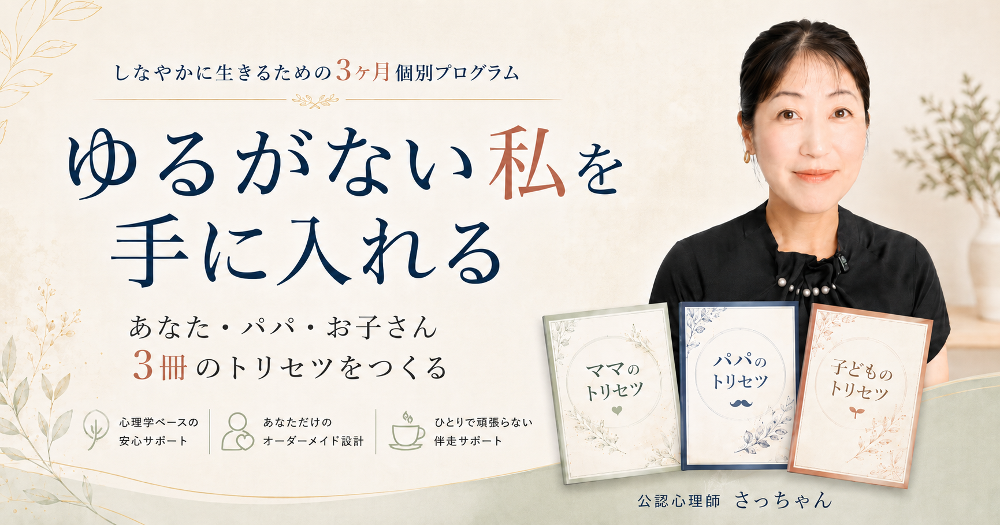
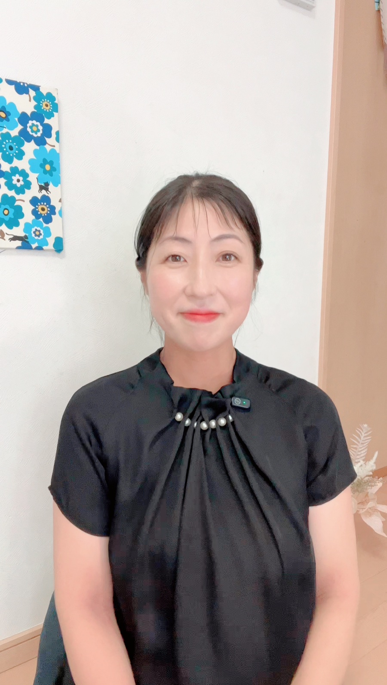

何があっても、自分に戻れる。
あなたのトリセツ、パパのトリセツ、お子さんのトリセツ。3冊のトリセツと「家族の軸マップ」を、公認心理師さっちゃんと一緒に3ヶ月で完成させます。
まずは60分の無料相談から。いきなりのお申し込みではありません
それは、努力不足でも
性格の悪さでも、ありません。
合わない「がんばり方」を、まじめに続けてきただけ。
がんばりすぎは、弱さではありません。背負う力が強いということです。
必要なのは、もっとがんばることではなく、自分に合ったがんばり方を知ることです。
お子さんの資質に合った声かけの型が手に入り、「私の関わり方はこれでいい」と思える根拠ができます。
「私はダメ」ではなく「私はこう扱えばうまくいく」へ。自分の資質と心のクセを知ると、見える景色が変わります。
パパのトリセツをもとに「伝わる頼み方」を実際に試し、すれ違いを仕組みからほどいていきます。
なぜ私はいつも「こう感じて、こう動いて」しまうのか。心のクセを地図にします。
あなたは何を持って生まれてきたのか。生年月日から、資質と力の使いどころを見ます。
じゃあ明日から何をどう変えるか。性格を変えるのではなく、きっかけと環境を小さく変えます。
「知って終わり」にしないために、毎回のセッションには必ず小さな行動実験がついています。学んだのに変われなかった経験がある方にこそ、受けてほしい設計です。
悩みの言語化と、あなたの心のクセの発見から始めます。
命式を一緒に読み、「だから私はこうだったんだ」をつくります。
イライラや自己嫌悪を仕組みからほどく、自分専用の整え方を設計します。
夫を変えるのではなく、伝わる形に翻訳する。夫婦の橋をかけ直します。
その子の資質に合う声かけへ。叱る回数を減らして、届く言葉を増やします。
家族全員の資質を1枚に。3ヶ月の変化を確かめて、次の一歩を決めます。
ペースは隔週(約3ヶ月)と毎週(約6週間)から選べます。毎週ペースの場合も、サポート期間は変わらず3ヶ月。後半はまるごと実践フォロー期間になります。
あなた・パパ・お子さんの資質と扱い方をまとめた、
世界に1組だけの3冊をお渡しします。
家族全員の資質を1枚に並べた「わが家の取扱説明」。迷ったとき、いつでもここに戻れます。

心の国家資格である公認心理師。個別セッション350回以上、特別支援教育の現場で10年以上、子どもと家族に向き合ってきました。心理学と四柱推命をかけ合わせた「あなたのトリセツ作り」が専門です。
私自身も3人の子どもを育てるママです。正しい方法を探し続けるより、自分に合ったがんばり方を知るほうが、ずっと早くラクになれる。それを、あなたの毎日で一緒に確かめていきます。
このプログラムは現在、正式リリース前のモニター期間です。モニター価格でご受講いただくかわりに、次の2つをお願いしています。
募集は5名です。掲載前には必ず内容をご確認いただきますので、安心してください。
受講費とお支払い方法は、個別相談のなかで直接ご案内しています。相談にお越しいただいても、無理なおすすめは一切しません。
いきなりお申し込みいただく講座ではありません。
まずは個別相談で、あなたの命式を一緒に見ながら、
「私の場合はどうか」を確かめてください。
合うかどうかは、それから決めれば大丈夫です。
カレンダーから空いている日時を選ぶだけ。
ページは一部英語表記ですが、日付を選んで入力するだけなので大丈夫です！
無理しすぎず、いきましょう。|公認心理師 さっちゃん